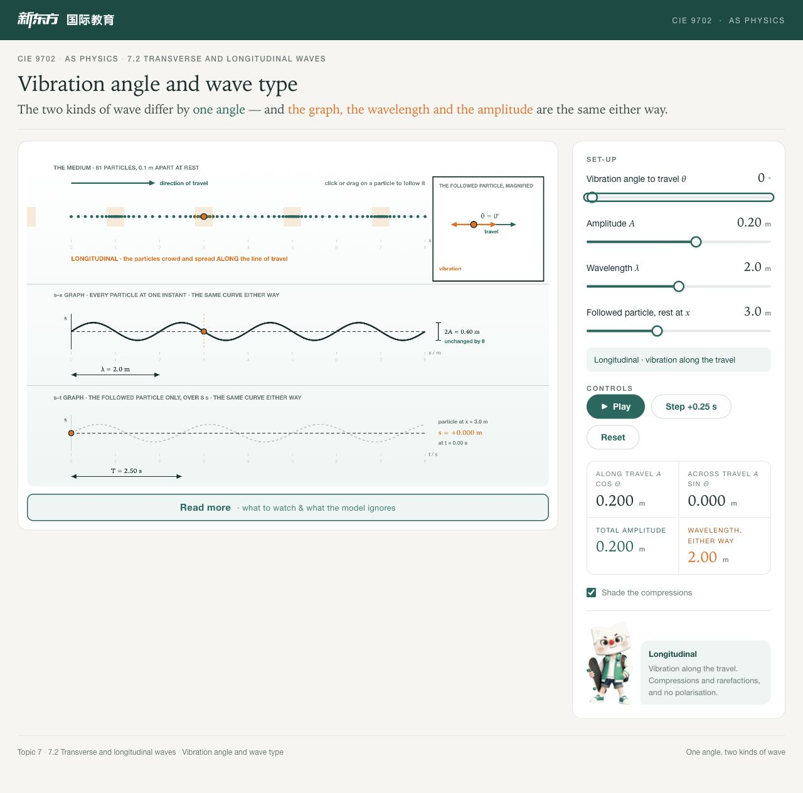
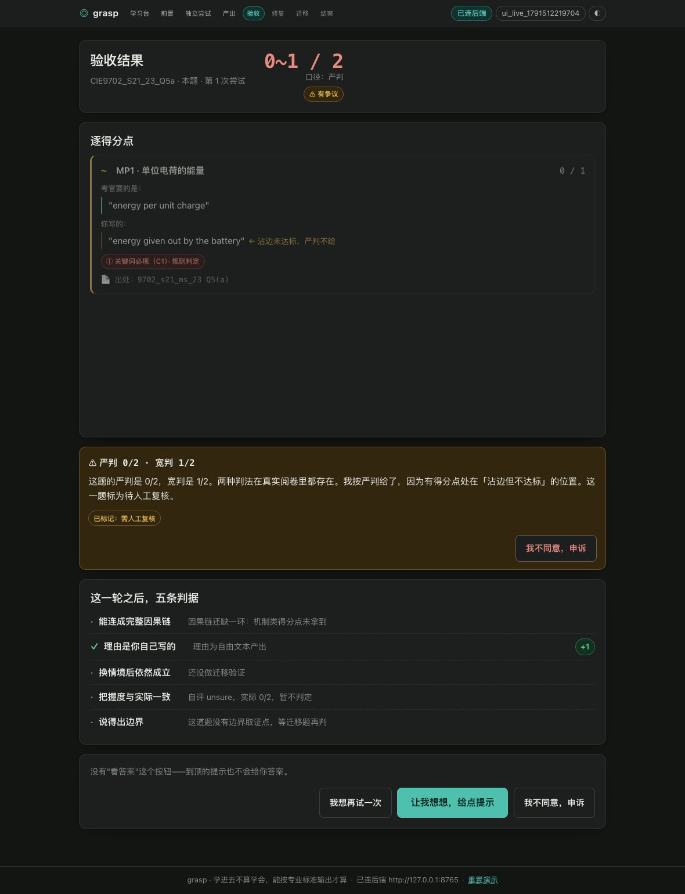
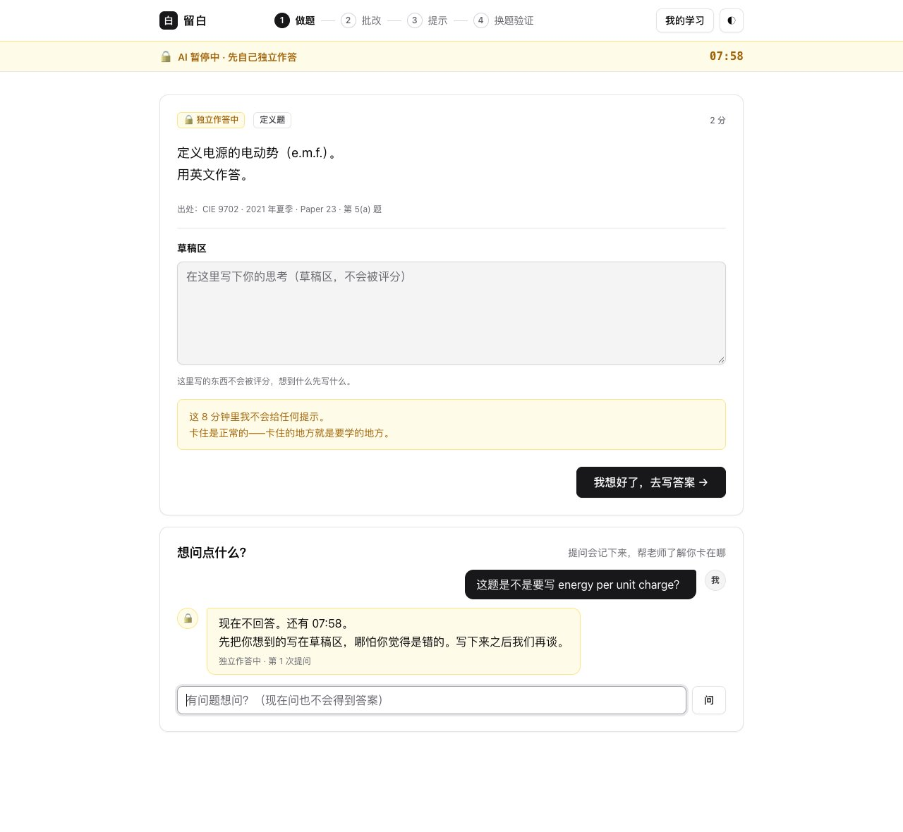
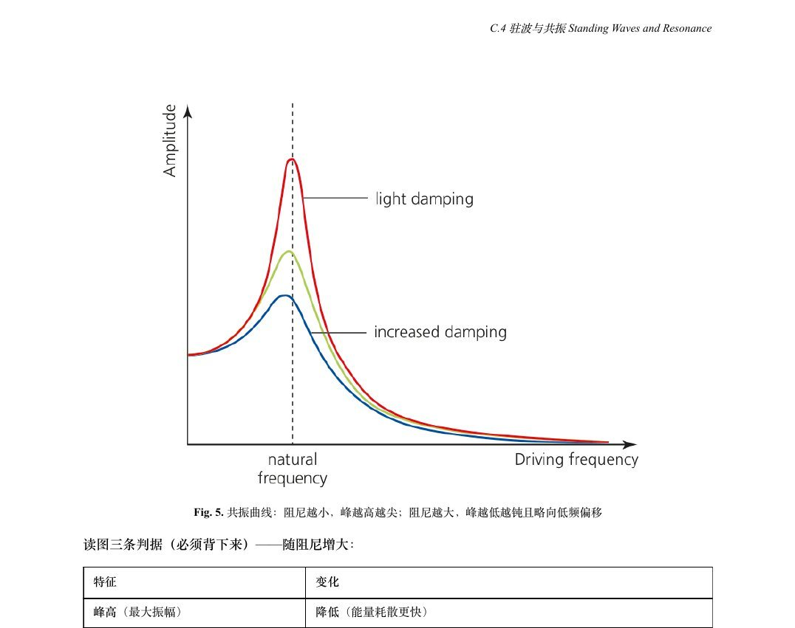

国际物理教师 · 上海新东方
教授 AP、Cambridge International、Pearson Edexcel 物理及竞赛课程，并参与 IB 课程准备。2026 年 5 月的 6 位 AP 学生中，4 位获 5 分、2 位获 4 分；这不能单独归因于某项教学资源。
物理教师 · 学习体验设计
我在上海教授国际课程物理，并借助 AI 开发学习资源。我的工作始于一个课堂问题：除了答对题目，我们如何判断学生是否真正理解？
浏览精选作品 ↗01 / PORTFOLIO
从三个角度回应这个问题：看清学生的思考过程、设计有边界的练习反馈，以及帮助教师审慎地使用 AI。
01 / 交互学习 · 已用于教学
不少学生把纵波位移图像当成介质的形状。即使选对或画对了曲线，仍可能没有把质点的往复振动与图像对应起来。
我选定概念、核验物理规律，并借助 AI 编程构建浏览器模拟。波动案例将质点振动与两种图像并列呈现，可逐帧追踪单个质点。
我围绕力学、波动和电学设计了 34 个模拟，分享覆盖约 100 位教师（指估计的分发范围，而非核实的活跃使用人数）。课堂演示帮助学生理解了曲线上正负位移的含义，但学生遇到陌生题目时能否迁移，尚未经过可靠测量。
我计划对比学生使用前后的解释，再用不提供模拟的陌生波动题检验迁移，按明确量规评分并分析仍然存在的误解。

02 / 形成性反馈 · 原型开发暂停
如果提示给得太早，我担心学生借助提示完成了练习，却仍无法独立解题。我希望设计一套流程：在学生独立尝试阶段暂不提供 AI 提示，同时减轻教师逐点核对评分标准、给出反馈的负担。
我借助 AI 辅助编程，设计了对照官方评分标准批改并给出分级提示的原型。系统将独立作答、换题检验与有提示的练习分开，按得分点展示批改依据，并将判分分歧标出供教师复核。
我用 16 份学生作答测试了 7 个大模型。由于对照分数经 AI 辅助复核、缺少可靠的人工评分基准，测试中的一致率不能证明批改准确率或学习效果。在建立可靠的评价基准之前，我暂停了后续开发。
我计划先建立人工评分基准、处理评分者之间的分歧，在考察评分一致性的同时评估反馈质量，再验证学生能否在无 AI 辅助时独立解释并解决新问题。


03 / 教师发展 · 内部实践
AI 能很快生成教学初稿，但生成速度并不能保证概念推进连贯、物理关系准确或练习设计有效。
自 2026 年 1 月起，我借助 AI 搭建了 13 个内部教研工具，生成覆盖 50 多个单元的双语讲义。我负责定义需求、制定九个维度的检查表，并审查和修订了 11 批产出——常做的一类修改是调整概念引入顺序，让学生更容易自学。
我撰写的腾讯 WorkBuddy 实操指南被上海、北京、无锡、重庆四个中心采用，先后培训约 60 位教师和 30 位教育顾问，并主持两次 AI 教学应用教研活动（以上反映交付与采用范围，尚未测量对学生学习效果的影响）。
哪些检查步骤能够发现关键错误，哪些步骤可以降低教师负担？我希望把教师复核投入与学生实际获得的学习任务质量联系起来。
在一次波动讲义审查中，我发现并修订了一个误导性的解释。下面概述原有表述与修订后的解释。
把位移—距离图像斜率最大的地方描述为压强等于大气压。
对于小振幅正弦纵向行波，压强扰动与位移对位置的负梯度成正比。压缩与稀疏中心的位移为零、压强取极值；位移取极值处的压强扰动为零。
检查重点：先核验图像背后的物理关系，再统一讲义解释与模拟演示（此处展示教师的内容把关过程，不代表已测得的学生学习增益）。

IN DEVELOPMENT
将网页端课程与 VS Code 中的真实代码文件、运行和检查连接起来，区分“只读过讲解”与“留下实际编程尝试的记录”；学习效果尚未验证。
围绕需求分析、内容生成、测试、修改与交付设计的互动营销项目。目前的检查主要针对软件逻辑，课堂可行性与学生个人迁移仍待验证。
以 Edexcel IAL Unit 1 试跑八阶段课程开发流程的前五步。在建立可靠的生成内容评价方法之前，进一步开发已暂停。
RESOURCE ARCHIVE
原有中文资料页保留知识点与易错点浏览、教学资源样例及项目过程材料；上方双语案例提供统一的阅读主线。
02 / BACKGROUND
教授 AP、Cambridge International、Pearson Edexcel 物理及竞赛课程，并参与 IB 课程准备。2026 年 5 月的 6 位 AP 学生中，4 位获 5 分、2 位获 4 分；这不能单独归因于某项教学资源。
从 37 位候选人中选出的 6 位见习产品设计师之一。关注如何把课堂问题转化为学习工具，以及需要什么证据来改进它们。
参与检测、依据标准撰写报告和实验室筹备。这段经历让我重视明确的判定标准与可追溯的依据。
参与结构试验、数据分析和数值模拟。相关工作形成四项专利申请，其中两项已获授权。
工科训练培养了我建模、量化测量和核查前提假设的习惯。
03 / QUESTIONS TO PURSUE
借助 AI 回看自己 217 节课的课堂转录文本时，我注意到自己常常提问后太快给出答案。我把这项分析当作教学反思的线索（而非教学质量的精确测量），开始在备课时提前设计关键追问，并在课堂上留出更长时间让学生解释思路。
我下一步关注的问题是：教师如何高效复核、校准 AI 生成的反馈，同时看清学生的推理？我希望围绕波动或电学解释题，结合明确量规、人工评分作答和独立迁移任务，研究教师参与复核的形成性评价流程。
我希望把这些课堂问题带入研究生阶段的学习，再把更可靠的学习评价方法带回教学。
04 / CONTACT
本作品集展示精选工作与反思，不公开学生记录及机构内部材料。原始截图可能包含中文；中英文版本提供对应的完整案例说明。